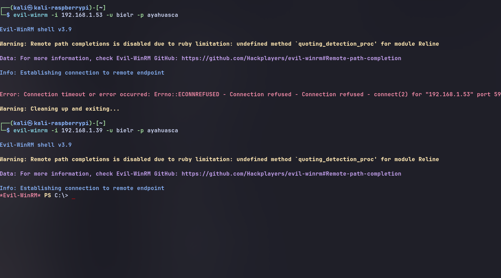

Evil-WinRM is a command-line utility that works with Microsoft's Windows Remote Management (WinRM) service. It is commonly used in authorized system administration, security labs, and penetration-testing environments where users already have permission to access the target systems.
On Kali Linux, Evil-WinRM is available as a package and can be installed through the distribution's package manager. The tool is written in Ruby and relies on WinRM-related Ruby libraries.
Only use Evil-WinRM on systems you own or are explicitly authorized to access. Unauthorized access may violate laws, regulations, and organizational policies.
For this tutorial we will be using the next command:
usage: evil-winrm [-h] -i IP [-u USER] [-p PASSWORD]
-h : Means "help"
-i : Normally means for the private ip (ipv4) from the pc that we want to access
-u : This is for the user. To know the pc's user just put in the terminal the command: whoami
-p : This is for the password of the pc
Ports: 5985,5986
Use this command: sudo nmap -p 5985,5986 (here the ip)
If they're opened then you're able to attack it!
For opening those ports go to the windows powershell as administrator and put the next command:
New-NetFirewallRule ` -DisplayName "WinRM HTTP 5985" ` -Direction Inbound ` -Protocol TCP ` -LocalPort 5985 ` -Action Allow New-NetFirewallRule ` -DisplayName "WinRM HTTPS 5986" ` -Direction Inbound ` -Protocol TCP ` -LocalPort 5986 ` -Action Allow
